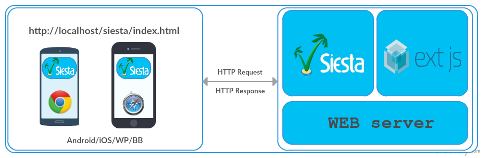

ExtJS testing
Demo of Modern ExtJS automation on phones
Sencha QA ExtJS demo
Created by Martin Prokeš <martin.prokes@profiq.com>
The goal
- Execute automated tests on phones/tablets
- Siesta
- Automated execution/reporting
- Re-usable for desktop browsers
Architecture
- Webserver with application and siesta hosted
- Phone loads Siesta harness/index page and runs tests automatically in full screen
How it should work
- Start tests via webdriver CLI
- Tests are executed on real device
- Report generated to file
- Push test results to TestRail
How it works now
- Load Siesta UI manually
- w/ UI - page view is deformed, extremely slow perf
- w/o UI - not trivial to get results
- Tests auto start
- Simple JSON Report generated
How is it developed
- Siesta - Touch
- Javascript
Integrations
- Generate JSON file based on test results
- Push results to TestRail using Filip's trr tool
DEMO
Next steps
- Design architecture to run tests on all supported mobile platform
- Discover possible diffs/limitations across browsers
- Comfortable reporting
- Consider plus/cons of automated execution
- Extend test coverage